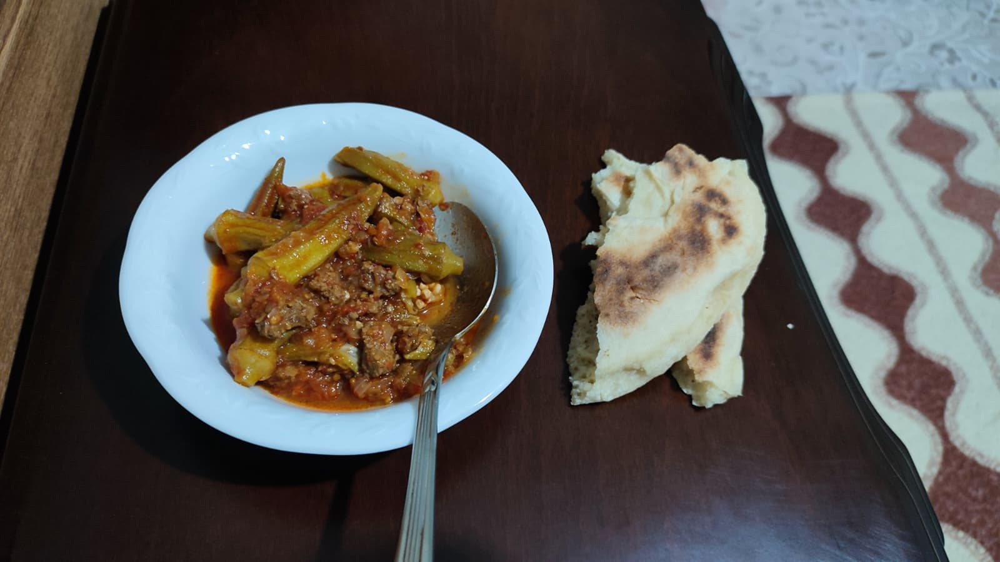
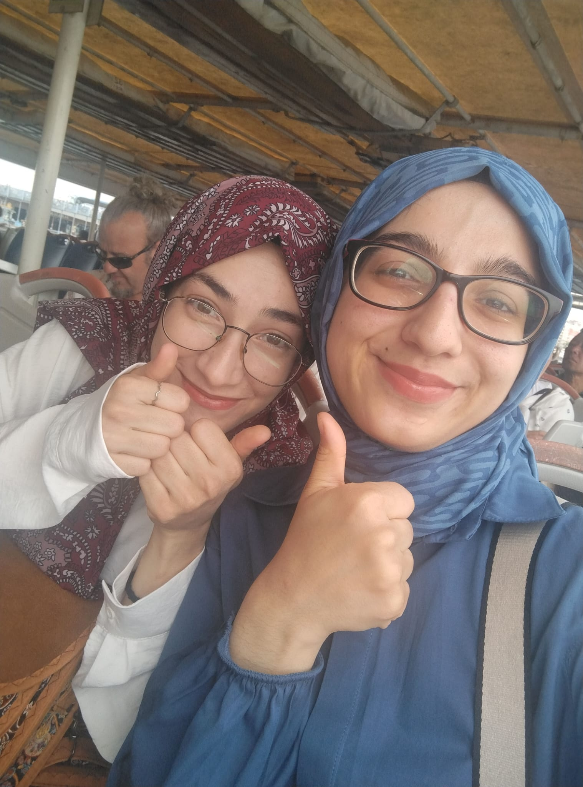
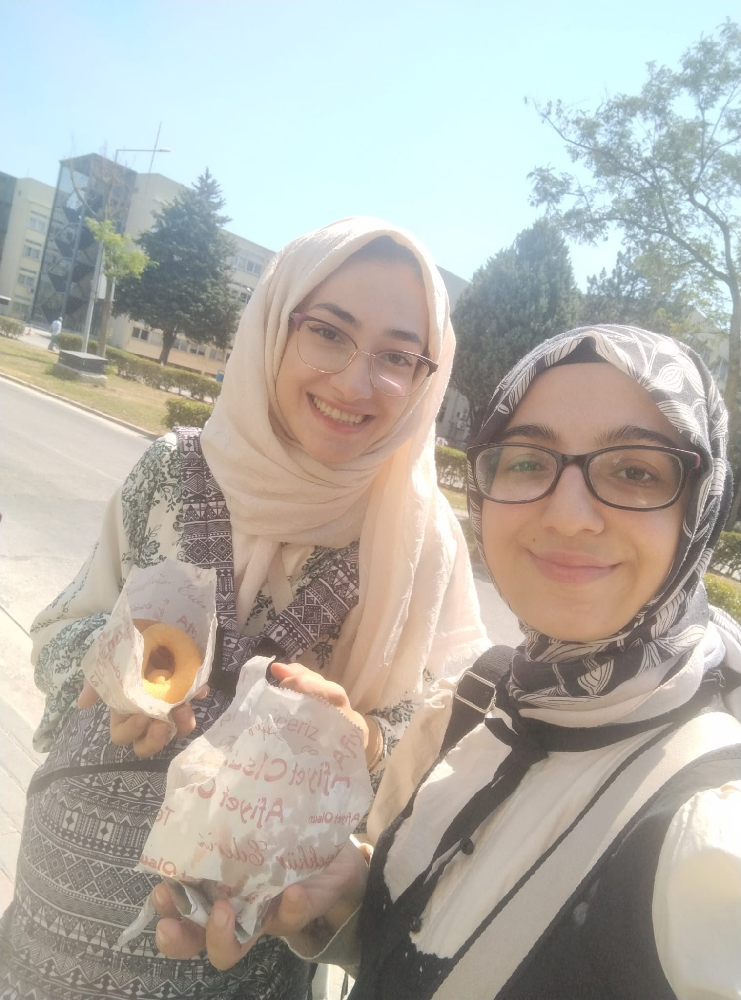
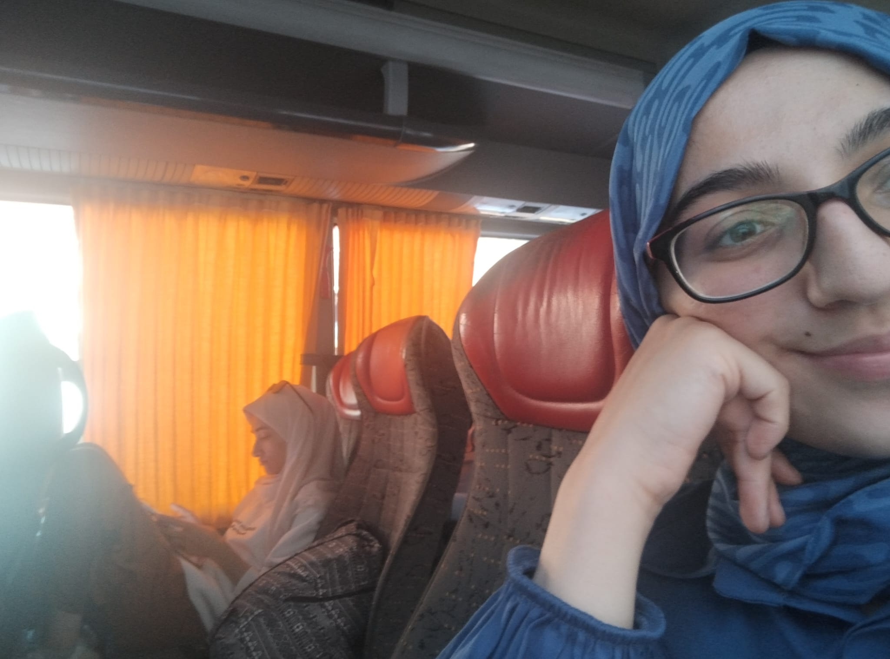

KÜÇÜK BİR DİJİTAL ANI DEFTERİTwitter'dan gerçek hayata, bol kahkahalı bir dostluk. 💙
Başlangıç1 / 8
✦ ÖZEL ARŞİVEmine için
BİR ZAMANLAR, TWITTER'DA...
Bir bildirimle başladı.
Bir mesaj, biraz kahkaha, bir otobüs durağı, bamya ve bazlama… Sonra da iyi ki dediğimiz kocaman bir dostluk.
Bu küçük site, güzel anılarımıza özel hazırlandı. ♡
♥
1 yeni mesaj 💬
✦♡✧
online friendship turned into real life
01 / İLK MESAJ𝕏
Her şey bir mesajla başladı.
Birbirimizi Twitter'da tanıdık. Sonra konuşmalar uzadı, kahkahalar çoğaldı ve internetten tanıdığım biri yavaş yavaş en sevdiğim insanlardan biri oldu.
‹
E
EmineMesaj isteği • eski güzel günler
•••
İLK MESAJIMIZ
E
Seni linçlediler ama ben de öyle düşünüyorum çok haklısın. 😂💙ilk mesajlardan biri
AHSHSHSHS, sonunda beni anlayan biri! 😭
♡
♡Mesajlarımızın devamı kahkaha...➤
✎ Kim bilebilirdi ki bu mesaj, “best friendim” diyeceğim bir dostluğun başlangıcı olacaktı?
02 / GERÇEK HAYAT☾
O meşhur otobüs durağı...
Bir gün yaşadığım yere geldin. Akşam olmuş, hava kararmıştı. Sen beni otobüs durağında bekliyordun. Ben de heyecanla yanına geldim.
Sonra kol kola girip benim eve doğru yürüdük. İnternet arkadaşlığımız artık gerçek bir anıya dönüşmüştü. 💗
03 / EV ZİYARETİ🍲
Gecenin yıldız menüsü.
Kol kola eve geldik, oturduk, sohbet ettik. Ve tabii ki bu hikâyenin unutulmaz menüsü masadaydı:
🍲
BAMYAGecenin başrolü
+
🫓
BAZLAMAMenünün yıldızı
ŞEFİN TAVSİYESİ: BİRLİKTE YEMEK 😂

🍲 🫓Bamya ve bazlama anısıassets/bamya-bazlama.jpg dosyasını ekle
BAMYA & BAZLAMA GECESİev sıcaklığı ♡
Bir süre sonra...“Ben uyuyacağım.”Emine, daha yeni gelmiştin. 😭
04 / YENİ GÜN☀
Sabah oldu, macera devam.
Uyandık, hazırlandık, süslendik ve gezmeye çıktık. Bir gün önce Twitter'dan tanıdığın insanla ertesi sabah birlikte hazırlanıp dışarı çıkmak… Hayatın tatlı sürprizlerinden biri.
♡ İyi ki gelmişsin Aşk Bahçem. İyi ki o gün buluşmuşuz.
05 / ANI ALBÜMÜ▧
Biriktirdiğimiz küçük güzellikler.
VE DAHA BİRİKTİRECEĞİMİZ ANI VAR ONA GÖRE HE 💙

♡assets/birlikte-1.jpg
“İyi ki tanışmışız.”

✦assets/birlikte-2.jpg
“Daha çok anıya!”

☀assets/birlikte-3.jpg
“Best friend arşivi.”
iYİ Kİ DOĞMUŞSUN ÇİÇEĞİM
06 / SADECE SANA♡
Bir de sana sakladığım şey var...
Bu bölüm herkese açık değil. Yani… siteyi açan herkes görebilir ama önce senin küçük bir butona basman gerekiyor. 🤫
♡
EMİNE'YE ÖZEL
♡
Emine, belki de hayatımızdaki en güzel insanlar hiç beklemediğimiz bir anda karşımıza çıkıyor. Sen benim karşıma bir Twitter mesajıyla çıktın ama kalbimde çok güzel bir yer edindin.
İyi ki benim arkadaşımsın. İyi ki varsın bestim. Daha yaşayacağımız çok anı var. 💙
— Seni seven arkadaşın
✦ BUGÜNÜN EN GÜZEL BİLDİRİMİ ✦
🎂
BİR TWİTTER BİLDİRİMİYLE BAŞLAYAN DOSTLUĞA
İYİ Kİ DOĞDUN EMİNE!
İYİ Kİ VARSIN BESTİM! 💙
Hayatıma girdiğin, benimle güldüğün ve güzel anılar biriktirdiğin için teşekkür ederim. Daha çok gezelim, daha çok gülelim, daha çok saçmalayalım. Twitter'da başlayan hikâyemizin nice güzel bölümleri olsun.
Doğum günü tarihini seçince geri sayım burada görünecek. ♡
💌Emine'ye bir mektupAçmak için aşağıdaki butona dokun.
Canım Emine'm,
İyi ki Twitter'da karşılaşmışız. İyi ki o gün yanıma gelmişsin. Otobüs durağındaki ilk buluşmamız, “Ay sen güzelmişsin” demen, bamya ve bazlama maceramız… Hepsi benim için çok özel.
Sen benim en güzel tesadüflerimden birisin. Hayat sana hep kalbin kadar güzel şeyler getirsin. Yeni yaşında dilediğin her şey gerçek olsun.
İyi ki doğdun, iyi ki varsın. Seni çok seviyorum bestim! 💙